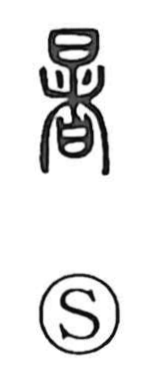

署

Uncategorized
Kun: shirusu | On: sho
government office ・ public office ・ to sign ・ signature ・ to record
Explanation
Shirakawa reads 署 as a phono-semantic compound: the phonetic element 者 provides the sound sho, while the upper component 罒 (网), the form of a net or screen, evokes the lattice or barrier set over an entrance. Such a marked gateway (a gate-fence) was where the guardhouse stood, the place that controlled access and watched against intruders. From this guard post at the entrance the character came to mean a governmental office. And from the practice of fixing a mark at the door, it naturally extended to the idea of leaving a written mark—hence to sign or to record.